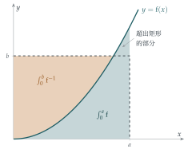

STEP III 2011，第 4 題
繼續之前，請先閱讀題目（原題為英文）。題目載於 STEP Support Programme 的題目資料庫： step.maths.org/questions/11-s3-q4
引子
這裏有一個不等式（inequality），證明它的圖簡單得可以畫在一枚郵票上。畫一條通過原點的遞增曲線。曲線下方的面積，加上曲線左方的面積，總能蓋住一個矩形。單憑這一個觀察，就得出楊氏不等式（Young’s inequality）\(ab \leq \frac{a^p}{p} + \frac{b^q}{q}\)，而它又是通往赫爾德不等式（Hölder’s inequality）和柯西–施瓦茲不等式（Cauchy–Schwarz inequality）的鑰匙，這兩個不等式是分析學中最重要的工具之一。
這幅圖還蘊藏着一個更深刻的想法。它以完全對稱的方式把一個函數與它的反函數（inverse function）配成一對；把這種配對加以推廣，就是勒讓德變換（Legendre transform），它把古典力學的兩大表述方式聯繫起來，也把熱力學的兩種主要描述聯繫起來。
動筆之前
\(\int_0^a \mathrm{f}(x)\,\mathrm{d}x\) 是曲線與 \(x\) 軸之間的面積。在同一幅圖上，\(\int_0^b \mathrm{f}^{-1}(y)\,\mathrm{d}y\) 代表哪一塊面積？
\(x = \mathrm{f}^{-1}(y)\) 的圖像與 \(y = \mathrm{f}(x)\) 是同一條曲線，只是橫着看而已。所以 \(\int_0^b \mathrm{f}^{-1}(y)\,\mathrm{d}y\) 是曲線與 \(y\) 軸之間、由高度 \(0\) 到高度 \(b\) 的面積。明白了這一點，第 (i) 部分只需要畫圖。
逐步解題
階段 1 圖形
畫出以 \((0, 0)\) 和 \((a, b)\) 為頂點的矩形。用一種顏色塗上曲線下方由 \(0\) 到 \(a\) 的區域，再用另一種顏色塗上曲線左方由 \(0\) 到 \(b\) 的區域。這兩個區域能蓋住整個矩形嗎？甚麼時候既沒有重疊，也沒有多出來的部分？
這兩個區域合起來蓋住整個矩形 \([0, a] \times [0, b]\)，通常還蓋住矩形以外的一些面積（圖 3.4.1）。矩形內的每一點 \((x, y)\)，不是在曲線下方（因為 \(x \leq a\)，所以屬於第一個區域），就是在曲線左方（因為 \(y \leq b\)，所以屬於第二個區域）。因此塗色部分的總面積至少等於矩形的面積 \(ab\)。這就是 \((*)\)。

多出來的部分，就是曲線與矩形頂點之間那一小塊曲邊區域。它恰好在曲線通過頂點 \((a, b)\) 時消失，也就是當 \[b = \mathrm{f}(a).\]
階段 2 楊氏不等式
取 \(\mathrm{f}(x) = x^{p-1}\)，\(\mathrm{f}^{-1}(y)\) 是甚麼？計算兩個積分，並用 \(\frac1p + \frac1q = 1\) 化簡第二個。
由於 \(p > 1\)，\(\mathrm{f}(x) = x^{p-1}\) 連續而且遞增，並且 \(\mathrm{f}(0) = 0\)，而 \(\mathrm{f}^{-1}(y) = y^{1/(p-1)}\)。於是 \[\int_0^a x^{p-1}\,\mathrm{d}x = \frac{a^p}{p}, \qquad \int_0^b y^{1/(p-1)}\,\mathrm{d}y = \frac{b^{1 + 1/(p-1)}}{1 + 1/(p-1)}.\] 由 \(\frac1p + \frac1q = 1\) 得 \(q = \frac{p}{p-1}\)，所以 \(1 + \frac{1}{p-1} = \frac{p}{p-1} = q\)，第二個積分就是 \(\frac{b^q}{q}\)。因此 \((*)\) 變成 \[ab \leq \frac{a^p}{p} + \frac{b^q}{q}. \qed\] 等號應在 \(b = \mathrm{f}(a) = a^{p-1}\) 時成立。驗證：這時 \(ab = a^p\)，而 \(b^q = a^{(p-1)q} = a^p\)，所以右邊是 \(a^p\bigl(\frac1p + \frac1q\bigr) = a^p\)。■
取 \(p = q = 2\)，這就是 \(ab \leq \frac{a^2 + b^2}{2}\)，其實是 第 3.2 節 中兩個數的算術–幾何平均不等式（AM–GM inequality）換了個樣子。
階段 3 反正弦
現在取 \([0, \frac\pi2]\) 上的 \(\mathrm{f}(x) = \sin x\)，它連續而且遞增，並且 \(\mathrm{f}(0) = 0\)，而在 \([0, 1]\) 上 \(\mathrm{f}^{-1} = \arcsin\)。
\(\int_0^a \sin x\,\mathrm{d}x\) 很容易。你會怎樣求 \(\arcsin y\) 的積分？
\(\int_0^a \sin x\,\mathrm{d}x = 1 - \cos a\)。至於反正弦，把它看成 \(\arcsin y \times 1\)，用分部積分法（integration by parts）： \[\int_0^b \arcsin y\,\mathrm{d}y = \Bigl[ y\arcsin y \Bigr]_0^b - \int_0^b \frac{y}{\sqrt{1 - y^2}}\,\mathrm{d}y = b\arcsin b + \sqrt{1 - b^2} - 1.\] 兩式相加，由 \((*)\) 得 \(ab \leq b\arcsin b + \sqrt{1 - b^2} - \cos a\)。■
現在推導關於 \(\arcsin(t^{-1})\) 的不等式。應該選哪一個 \(a\) 的值？（試試最簡單的那一個。）
取 \(a = 0\)：這時 \(0 \leq b\arcsin b + \sqrt{1 - b^2} - 1\)，即 \(b\arcsin b \geq 1 - \sqrt{1 - b^2}\)。（這不過是說 \(\int_0^b \arcsin y\,\mathrm{d}y \geq 0\)。）設 \(b = 1/t\)，其中 \(t \geq 1\)，於是 \(0 < b \leq 1\)，再除以 \(b\)： \[\arcsin\left(\frac1t\right) \geq t\left(1 - \sqrt{1 - \frac{1}{t^2}}\right) = t - \sqrt{t^2 - 1}. \qed\]
回顧
以圖為證。只要看出合適的圖，第 (i) 部分就是一個完整的證明。把幾何事實轉化為積分之間的不等式，是一種威力強大的技巧。
把一般結果特殊化。同一個一般的不等式，選取不同的 \(\mathrm{f}\)，就得出楊氏不等式和一個關於 \(\arcsin\) 的不等式。
最簡單的選擇可能正是對的選擇。最後的推導用了 \(a = 0\)，這時不等式幾乎是顯然的。簡單的情況一定要試試。
背後的數學
楊（William Henry Young）在 1912 年發表他的不等式。它之所以重要，在於它所引出的結果。假設 \(\sum a_i^p = 1\) 及 \(\sum b_i^q = 1\)。對每一對數應用楊氏不等式，然後相加， \[\sum a_i b_i \leq \frac{\sum a_i^p}{p} + \frac{\sum b_i^q}{q} = \frac1p + \frac1q = 1.\] 把各個 \(a\) 和各個 \(b\) 按比例縮放，使兩個和都等於 \(1\)，就得到赫爾德不等式：對正數， \[\sum a_i b_i \leq \Bigl(\sum a_i^p\Bigr)^{1/p} \Bigl(\sum b_i^q\Bigr)^{1/q}.\] 取 \(p = q = 2\)，這就是柯西–施瓦茲不等式 \(\sum a_ib_i \leq \sqrt{\sum a_i^2}\sqrt{\sum b_i^2}\)，它說的是兩個向量夾角的餘弦最多為 \(1\)。赫爾德不等式是 \(L^p\) 空間理論的基礎；在這些函數空間裏，「距離」是用 \(\bigl(\int |f|^p\bigr)^{1/p}\) 來量度的，你會在泛函分析（functional analysis）和概率的課程中遇到它們。
勒讓德變換
圖 3.4.1 對 \(\mathrm{f}\) 和 \(\mathrm{f}^{-1}\) 的處理完全對稱。記 \(F(a) = \int_0^a \mathrm{f}\) 及 \(G(b) = \int_0^b \mathrm{f}^{-1}\)。不等式說的是 \(F(a) + G(b) \geq ab\)，在曲線上等號成立，所以 \[G(b) = \max_a \bigl( ab - F(a) \bigr).\] 這個把凸函數（convex function）\(F\) 變成另一個凸函數 \(G\) 的運算，就是勒讓德變換，而連續做兩次就會回到 \(F\)。在力學中，它把拉格朗日量（Lagrangian，位置與速度的函數）轉換成哈密頓量（Hamiltonian，位置與動量的函數）：這是牛頓（Newton）定律的兩種等價表述，你會在大學二年級的課程中學到。在熱力學中，它在能量、焓（enthalpy）和自由能（free energy）之間互相轉換。對 \(F(a) = a^p/p\)，變換的結果是 \(G(b) = b^q/q\)，這就是楊氏不等式中兩個指數由 \(\frac1p + \frac1q = 1\) 聯繫起來的原因。
思維技巧
積分就是面積。在一幅精心挑選的圖中比較面積，可以證明一個從代數上難以看出的不等式。
留意這樣的圖：其中一個區域明顯包含另一個區域，或者幾個區域明顯蓋住第三個區域。然後把每塊面積轉化為積分。
延伸練習
1987 年的版本。試做 STEP I 1987，第 6 題。它用同一類圖來求反函數的積分。用求導來驗算你的答案。
柯西–施瓦茲。用 \(p = q = 2\) 的楊氏不等式，證明對正數有 \(a_1b_1 + a_2b_2 + a_3b_3 \leq \sqrt{a_1^2 + a_2^2 + a_3^2}\,\sqrt{b_1^2 + b_2^2 + b_3^2}\)。（提示：先處理兩個平方根都等於 \(1\) 的情況。）
指數版本。在 \((*)\) 中取 \(\mathrm{f}(x) = e^x - 1\)，證明對 \(a, b \geq 0\)， \[ab \leq e^a - 1 - a + (1 + b)\ln(1 + b) - b.\] 等號何時成立？
這個界有多好？ 較難 用計算機比較 \(t = 1, 2, 10\) 時的 \(\arcsin(1/t)\) 與 \(t - \sqrt{t^2 - 1}\)。證明當 \(t\) 很大時，\(t - \sqrt{t^2 - 1} \approx \frac{1}{2t}\)，而 \(\arcsin(1/t) \approx \frac1t\)。為甚麼這個界相差了一個因子 \(2\)？（看看 \(a = 0\) 時的圖：多出來的部分有多少被浪費了？）
延伸閱讀
J. Michael Steele, The Cauchy–Schwarz Master Class（Cambridge University Press）。第 1 章和第 9 章講述柯西–施瓦茲不等式和赫爾德不等式，途中也談到楊氏不等式。
Roger Nelsen, Proofs Without Words（Mathematical Association of America）。收錄了楊氏不等式和許多其他的圖形證明。
V. I. Arnold, Mathematical Methods of Classical Mechanics（Springer）。第 14 節正是用這幅圖來解釋勒讓德變換。內容較深，但相關的一節很短。